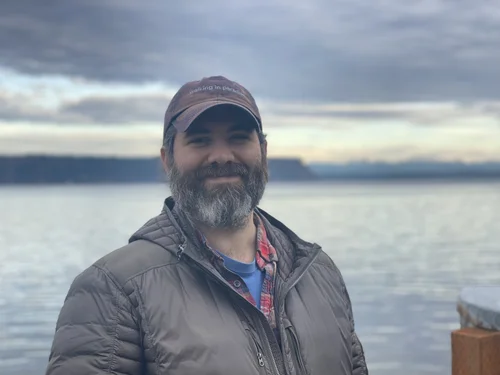
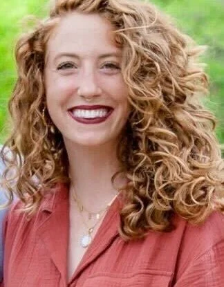
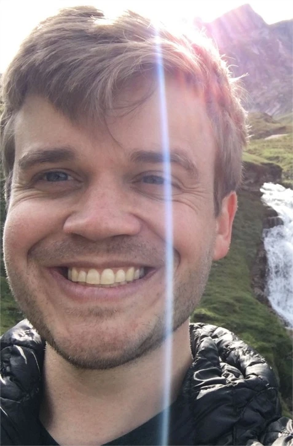
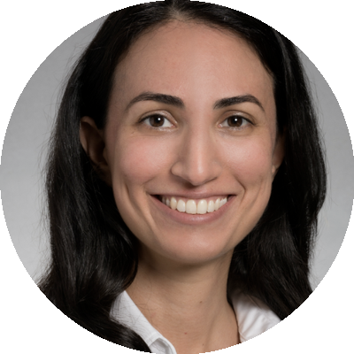
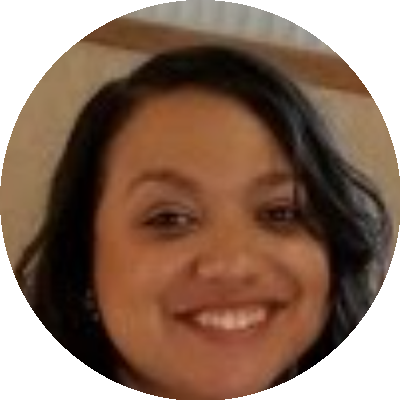
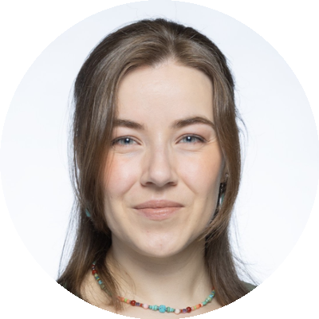
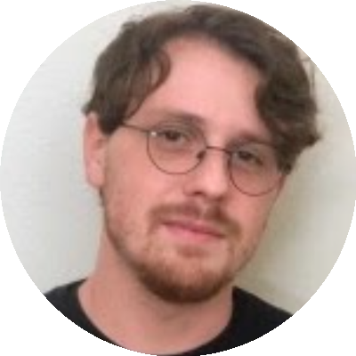

The Team
Leadership

Sam A. Golden, PhD
Associate Professor
Director, Undergraduate Program in Neuroscience
Ronald S. Howell Distinguished Faculty Fellow
Department of Neurobiology & Biophysics, Primary
Department of Anesthesiology & Pain Medicine, Adjunct
Sam received his BS in Neuroscience from Bates College (Lewiston, ME) in 2006, PhD in Neuroscience from the Icahn School of Medicine (New York City, NY) in 2015 under Dr. Scott J. Russo, and completed his Postdoctoral Fellowship at the National Institute on Drug Abuse (Baltimore, MD) in 2018 under Dr. Yavin Shaham. Sam joined the University of Washington Department of Biological Structure in 2019, with a co-appointment as a participating faculty in the UW Center of Excellence in Neurobiology of Addiction, Pain, and Emotion (NAPE). Sam's scientific interests encompass understanding the psychological and neural mechanisms guiding reward processing. He is particularly interested in understanding how neuropsychiatric disorders — such as maladaptive aggression, depression and substance abuse — subvert basic reward circuitry to manifest pathological behavior. Currently, he aims to better define the intersection of aggression and motivation, and identify the cellular and circuit mechanisms that control the transition from adaptive aggression to maladaptive aggression-seeking behavior.
Staff and Postdoctoral Fellows

Carlee Toddes, PhD
Postdoctoral Fellow (2022-present (co-mentored with Dr. Mitra Heshmati))
A postdoctoral research fellow specializing in the study of neural dynamics underlying pain-modulated social behavior. Carlee obtained her PhD from the University of Minnesota, where she conducted research in the Rothwell Lab investigating opioidergic mechanisms that underlie social affiliative behaviors. Beyond her laboratory work, she is deeply committed to promoting positive change in the scientific community through active involvement in science policy and advocacy.

Todd Appleby, PhD
Postdoctoral Fellow (2024-present)
[DRAFT -- please edit] Todd is a postdoctoral fellow studying opioid use and relapse. He developed an oral fentanyl self-administration procedure in mice that captures volitional intake, cue-driven seeking, extinction, and relapse, revealing separable escalation-prone and relapse-prone phenotypes tied to genetic background. He is committed to sharing open protocols, hardware specifications, and analysis code to lower the barrier to adopting this model.
Graduate Trainees
Key Collaborators
The Golden Lab collaborates closely with the Heshmati Lab (Department of Anesthesiology & Pain Medicine, University of Washington), led by Dr. Mitra Heshmati, on our shared research into the neural circuits of anesthesia and consciousness.

Mitra Heshmati, MD, PhD

Carlie Neiswanger, PhD

Minke Nota, PhD

Kevin Schneider, PhD
Undergraduate Trainees
- Nick Ressler — 2023-present
- Shireen Aryana — 2025-present
- Aurora Exner — 2025-present
- Shagun Seth — 2025-present
- Caroline Kobayashi — 2025-present
- Pearl Thapar — 2025-present
- Christine Cui — 2025-present
- Sofia Colaluca — 2025-present
Would you like to join the lab? This could be you! See our application page for more information on currently available positions.
Alumni
Staff and Postdoctoral Fellows
- Simon Nilsson, PhD — 2019-2021 — GOOGLE SCHOLAR - PUBMED
- JJ Choong, MA — 2019-2021 — GOOGLE SCHOLAR - PUBMED
- Eric Szelenyi, PhD — 2019-2025 — GOOGLE SCHOLAR - PUBMED
- Alex Murry, BS — 2021-2023 — PUBMED
- Kevin Schneider, PhD — 2022-2025 — GOOGLE SCHOLAR - PUBMED
- Lukas Macmillen, BS — 2024-2026
- Hallie Lazaro, BS — 2024-2025
PhD and MA Graduate Trainees
- Nastacia Goodwin, PhD — 2019-2024 — PUBMED
- JJ Choong, MA — 2019-2021 — GOOGLE SCHOLAR - PUBMED
- Roël Vrooman, MA — 2020-2021 — PUBMED
- Jovana Navarrete — 2021-2026 — GOOGLE SCHOLAR - PUBMED
Post-baccalaureate Trainees
- Briana Smith, BS — 2019-2020
- Liana Bloom, BA — 2019-2021
- Yizhe Zhang, BS — 2021-2023
- Ainsley Barrow, BS — 2023-2024
- Erica Sanchez, BS — 2024-2025
Undergraduate Trainees
- Tanvi Shedge — 2019
- Sophia Hwang — 2019-2020
- Mahathi Allepally — 2019-2020
- Cindy Xu — 2019-2021
- Annette Mercedes — 2019-2021
- Kayla Pitts — 2019-2022
- Aasiya Islam — 2020-2022
- Arash Tabesh — 2020
- Yizhe Zhang — 2020-2021
- Valerie Tsai — 2020-2022
- Emery Leggett — 2021
- Andrea Abanto — 2021 (UW ENDURE Program)
- Alexis Nguyen — 2021
- Kaylani Kukkadapu — 2021-2022
- Natalie Hoffman — 2021-2022
- Sarah Kadado — 2021-2022
- Drew-Elizabeth Barger — 2021-2023
- Lauren Mika Kuo — 2021-2023
- Ainsley Barrow — 2022-2023
- Pranav Anumolu — 2022-2025
- Kevin Bai — 2022-2025
- Yahir Gonzalez — 2022-2025
- Virginia Wang — 2022-2025
- Ethan Gross — 2022-2025
- Axelle Salazar — 2022-2025 (UW ENDURE Program)
- Bryce Bowler — 2022-2025
- Sam Husarik — 2023-2024
- William Riley Keeler — 2023-2025
- Aida Chan — 2023-2024
- Ian McRae — 2023-2025
- Isabel Halperin — 2023-2026
- Zoya Hill-Sargizi — 2024-2026
- Kelsey Carvajal — 2024-2025 (UW ENDURE Program)
- Brittni Atkinson — 2025-2026
High School Trainees
- Anika Consul — 2019-2020 (Tesla STEM High School)
- Hermona Hadush — 2021 (UW Rainier Summer Program)
- Shagun Seth — 2022 (UW Rainier Summer Program)
- Netrang Desai — 2022-2023 (Juanita High School)
- Aida Chan — 2023 (UW U-BRIGHT Summer Program)